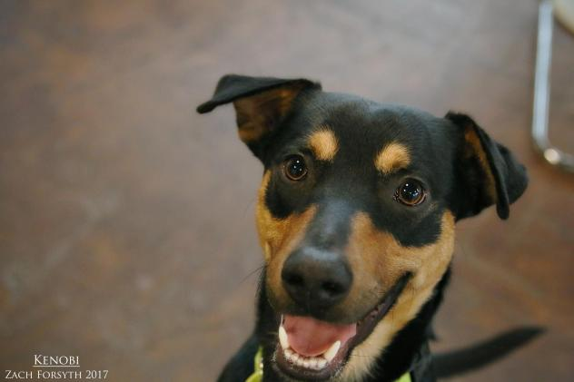
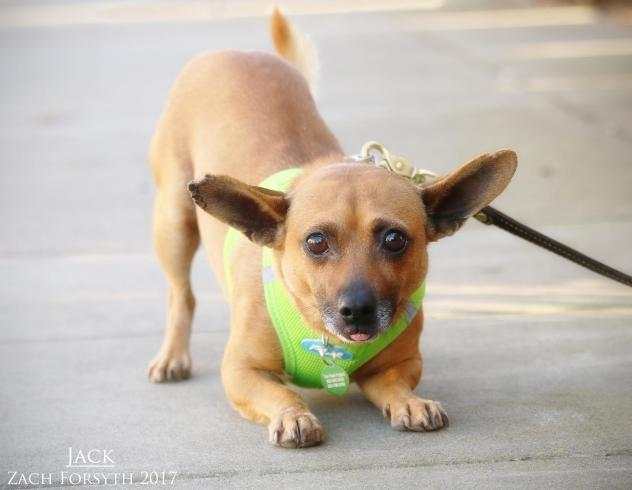
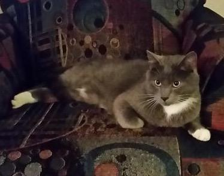
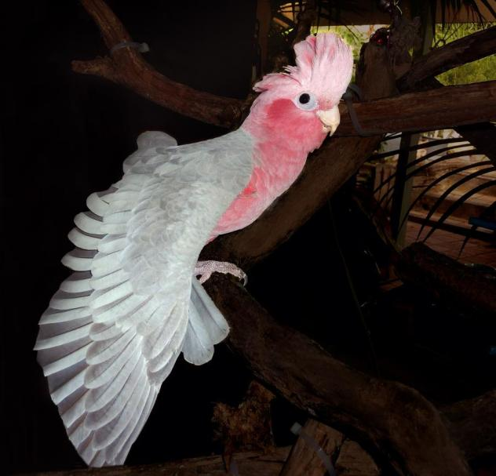
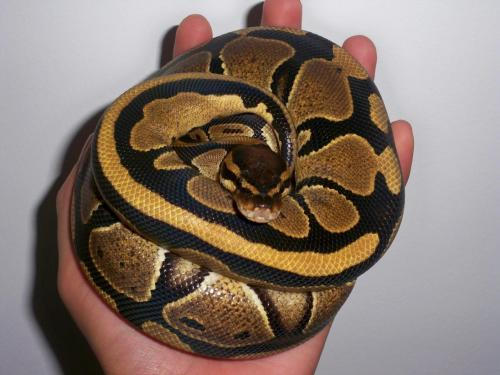

Kenobi
- Dog
- Shepard-Mix
- Young
- Male
- Large
About Me
The force is strong with this one! Hello everyone! My name Kenobi and I am a playful, energetic 1 year old shepherd mix weighing in around 50lbs. I am still a young, active guy that is just bouncy and fun! With all this energy, I would be a great hiking adventure dog, as we see all the wonders of the galaxy. Though I have the force, I am still learning how to use and will need someone willing to show me the basics, as PUPPY CLASSES ARE MANDATORY FOR MY ADOPTION! Because of my puppy bounces and jumps, I would need to be in home without kids or cats, and with a lot of space or a yard to run around in! I do enjoy playing jedi games with my puppy pals and would be ok with another confident pup that wants to play all the time like I do! I am just eagerly awaiting to start my next adventure. Will there be light sabers? Ewoks? Droids? I don’t know, but let’s find out! I have been searching across all the planets & moons just to find you! Fill out an application today, so we can meet! I come to you neutered, vaccinated, and micro-chipped with an adoption fee of $300.

Colby Jack
- Dog
- Terrier-Mix
- Adult
- Male
- Small
About Me
Look at those adorable bat ears! Hi everyone! My name is Colby Jack and I am an adorable 11lb terrier mix here to steal your heart. This city life is all so new to me, so I can be a little shy at first. But don’t let that fool you! Because once we have some time to hang out, I am a super energetic guy eager to bond. I just love to play fetch with my favorite squeaker toys, as I zoom around the play yard from left to right until I finally catch that toy! Because I am little sensitive to city life, I would prefer to be in a quiet low key neighborhood, as the bustle of apartment city life is overwhelming to me. I am quite the ladies man and love playing with my female puppy pals. So a lady in the house would be alright by me! I need to be in a cat free home with kids over 10. With a little patience and a few treats, I am a lovable goofball ready to play! Care to join me? Fill out an application today, so we can meet! I come to you neutered, vaccinated, and micro-chipped with an adoption fee of $300.

Henry
- Cat
- Domestic Short Hair
- Gray-and-White and Tuxedo Mix
- Adult
- Male
- Medium
About Me
The force is strong with this one! Hello everyone! My name Kenobi and I am a playful, energetic 1 year old shepherd mix weighing in around 50lbs. I am still a young, active guy that is just bouncy and fun! With all this energy, I would be a great hiking adventure dog, as we see all the wonders of the galaxy. Though I have the force, I am still learning how to use and will need someone willing to show me the basics, as PUPPY CLASSES ARE MANDATORY FOR MY ADOPTION! Because of my puppy bounces and jumps, I would need to be in home without kids or cats, and with a lot of space or a yard to run around in! I do enjoy playing jedi games with my puppy pals and would be ok with another confident pup that wants to play all the time like I do! I am just eagerly awaiting to start my next adventure. Will there be light sabers? Ewoks? Droids? I don’t know, but let’s find out! I have been searching across all the planets & moons just to find you! Fill out an application today, so we can meet! I come to you neutered, vaccinated, and micro-chipped with an adoption fee of $300.

Gala
- Parrot
- Red Breasted Cockatoo
- Adult
- Female
- Medium
About Me
* We will not ship any parrot, a home visit is mandatory. Delivery is available in most local areas of Washington and Oregon State. An additional delivery fee may be required for those qualified applicants who live more than 25 miles from Portland, Oregon.
*Please read our regulations and requirements to adopt from us, located at the top of our adoption application page.
- Applicant must be a minimum of 27 years of age to adopt from us.
- Home visits are mandatory with us
- We will NOT ship any parrot.
- We place parrots with any breeder.
- We will not place a parrot in a home with any Dachshund or Terrier mix dogs.
Baby is one, very unbelievably sweet & Affectionate gal. Rose Breasted Cockatoo can get jealous if you don’t give them their due attention daily. “Baby is just a young 7 years old Rose Breasted Cockatoos can live up to 40 years old with the right care.
Baby loves to be spoiled with daily treats of fresh veggies and fresh fruit. She also loves her warm comfort foods too. Baby is one very, very smart girl; she loves to play catch with you, as well as dance and march bounce dance and play with different types of toys. Baby can be real warm and comforting too; she enjoys warm cuddles while watching TV with you. She really is a special girl.
Baby dose mimic and speak, she knows how to blow a kiss to you and then wolf whistle, then after her kiss call to you. She will follow that up with “Hi Baby! Baby”! Then, “Whatcha’ doing”!? Baby also mimics a few other words, and garble talk, and we know she is very capable of learning much, much more. She’s shown us that she is one very intelligent gal.
If you’re sincerely interested in adoption Baby, we prefer that her new home have parrot experience so you can appreciate how special she really is. It’s not mandatory that you have specialty parrot experience for adoption, but it is preferred that you have at least 1 year of proven parrot Experience.
If you’re interested in adopting Baby with her large floor cage; Please don’t call us or e-mail us asking for her adoption fee. If you are ready to adopt Baby within 72 hours, then please submit in your adoption application as soon as you can.
Again, Please don’t e-mail us from this adoption website from this adoption website. We will Not respond back to your e-mail or calls without one of our adoption applications in hand. So, you must fill out one of our on line adoption applications from our website. Once we receive it, we will call you as soon as possible.
Please submit your adoption application for a quick response back, please visit our website, or copy and paste this link: Northwest Bird Rescue.

Enchi
- Snake
- Ball Python
- Adult
- Male
- Medium
About Me
Enchi is just over 1 years old. He will need an experienced owner that knows hows to handle and understands snakes. Enchi does allow you to pick him up and handle him, he is not fed in his tank. Ball pythons can live up to 30 years in captivity so please be sure he is the right type of animal for you. His adoption fee is $100.00 this includes his tank and lights. We will not ship him so please live with in driving distance.